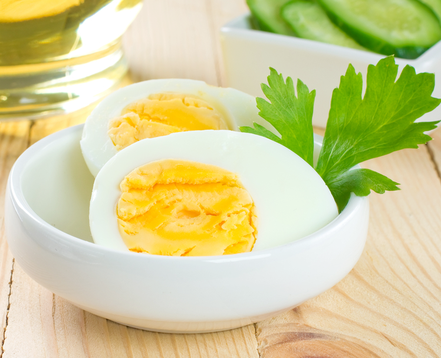
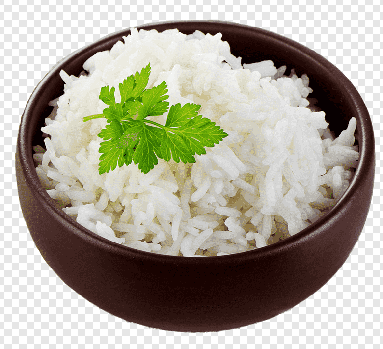
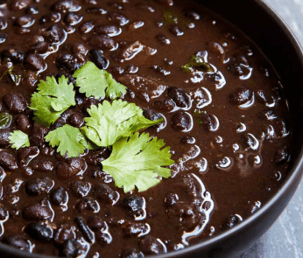

Ovo Cozido
Ingredientes:
- Agua
- 1 ovo
- Uma pitada de sal
Modo de Preparo:
- Coloque os ovos em uma panela com água fria suficiente para cobri-los.
- Leve a panela ao fogo alto até a água ferver.
- Reduza o fogo para médio-baixo e cozinhe os ovos por 6 a 7 minutos (gema mole) ou 9 a 12 minutos (gema firme).
- Remova os ovos da panela e coloque-os em água fria para esfriar. Em seguida, descasque e estão prontos para serem consumidos.

Arroz Branco
Ingredientes:
- 1 xícara de arroz branco
- 2 xícaras de água
- Sal a gosto (opcional)
Modo de Preparo:
- Lave o arroz em água fria até que a água fique clara. Isso ajuda a remover o excesso de amido e obter um arroz mais soltinho. Escorra bem.
- Em uma panela, adicione o arroz lavado e a água. Se desejar, adicione sal a gosto.
- Despeje a mistura de ovos na frigideira pré-aquecida.
- Leve a panela ao fogo alto até a água começar a ferver.
- Assim que a água ferver, reduza o fogo para baixo e tampe a panela.
- Deixe o arroz cozinhar em fogo baixo por cerca de 15 a 20 minutos. Evite abrir a tampa durante o processo para não interferir no cozimento.
- Após o tempo de cozimento, desligue o fogo e deixe o arroz descansar por mais 5 minutos, com a tampa ainda fechada. Isso ajudará a finalizar o cozimento e a absorver qualquer excesso de umidade.

Feijão
Ingredientes:
- 2 xícaras de feijão (de sua preferência)
- 6 xícaras de água
- 1 cebola média, picada
- 3 dentes de alho, picados
- Sal a gosto
Modo de Preparo:
- Lave bem o feijão em água corrente e deixe-o de molho em água por pelo menos 4 horas.
- Escorra a água do molho e coloque o feijão em uma panela grande.
- Adicione a cebola picada, o alho picado, o sal e cubra com as 6 xícaras de água.
- Leve a panela ao fogo médio-alto e deixe ferver.
- Reduza o fogo para médio-baixo e deixe o feijão cozinhando, com a panela parcialmente tampada, por cerca de 1 hora a 1 hora e meia, ou até que o feijão esteja macio.
- Mexa ocasionalmente durante o cozimento, adicionando mais água se necessário para manter o feijão coberto.
- Verifique o sal e os temperos, ajustando conforme necessário.